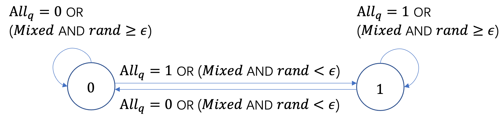

Q-Voter
The Q-Voter model [1] is a nonlinear extension of the classical Voter model that incorporates social reinforcement and stochastic independence. Each node holds a binary opinion \(h \in \{0, 1\}\). At each time step:
a node \(i\) is selected uniformly at random from the network;
\(q\) neighbors of node \(i\) are independently sampled (with replacement);
if all \(q\) sampled neighbors share the same opinion, node \(i\) adopts that unanimous opinion;
otherwise, with probability \(\epsilon\) (independence), node \(i\) flips its current opinion; with probability \(1-\epsilon\), it retains its current opinion.
Implementation
The Q-Voter model extends the Voter model by introducing a nonlinear social reinforcement mechanism: a group of \(q\) sampled opinions must reach unanimous agreement before the focal node conforms. When unanimity is not achieved, the independence parameter \(\epsilon\) governs the probability of a random opinion flip, preventing the system from freezing. Self-loops are removed to prevent a node from influencing itself.
{kind=link}

For each neighbor \(j \in N(i)\), generate a message equal to its current opinion:
Node \(i\) aggregates received messages by computing the mean opinion of its neighbors:
A node index \(i\) is selected uniformly at random. Draw \(q\) independent samples \(b_l \sim \mathrm{Bernoulli}(m_i^{(k)})\) for \(l = 1, \ldots, q\). Its opinion is updated as follows:
where \(U_i \sim \mathrm{Uniform}(0,1)\) is an independent random number and \(1 - h_i^{(k-1)}\) denotes the flip of the current opinion. Drawing \(q\) samples from \(\mathrm{Bernoulli}(m_i^{(k)})\) is statistically equivalent to sampling \(q\) neighbors with replacement and reading their opinions. When \(q = 1\), the single sample is always trivially unanimous and the model reduces to the standard Voter model. As \(q\) increases, unanimous agreement becomes harder to achieve, increasing the role of the independence parameter \(\epsilon\). All other nodes retain their current opinions.
Status
During the simulation, a node holds a binary opinion value:
Status |
Value |
|---|---|
Opinion |
0 or 1 |
QVoterModel
- class fs_gplib.Opinions.QVoterModel(data, seeds, q, epsilon, device='cpu', rand_seed=None)[source]
Bases:
DiffusionModelBinary Q-Voter opinion dynamics model on static graphs.
This model extends the classical Voter model with nonlinear social reinforcement. Each node holds a binary opinion in
{0, 1}. At every step, one node is selected uniformly at random and a virtual group of \(q\) neighbor opinions is sampled with replacement. If all \(q\) sampled opinions are unanimous, the selected node adopts that common opinion. Otherwise, with probability \(\epsilon\) the node flips its current opinion, and with probability \(1-\epsilon\) it keeps its current opinion.Returned node states are encoded as: 0 = opinion 0, 1 = opinion 1.
In this implementation, sampling \(q\) neighbors with replacement is realised by first computing the fraction of neighbors with opinion
1and then drawing \(q\) independent Bernoulli samples with that probability. Self-loops are removed internally so that a node does not influence its own opinion during the update.- Parameters:
data (torch_geometric.data.Data) -- PyTorch Geometric
Dataobject representing graph \(G=(V,E)\). Must containedge_index(the edge set \(E\)) andnum_nodes(\(|V|\)).seeds (list[int] | float | None) -- Initial nodes with opinion
1. Pass a list of node IDs, a float in(0,1)to initialise that fraction of nodes chosen uniformly at random with opinion1, orNone.q (int) -- Size of the sampled influence group. Must be a positive integer.
epsilon (float) -- Independence probability used when the sampled \(q\)-group is not unanimous. \(\epsilon \in [0,1)\), \(\epsilon = 0\) disables such random flips.
device (str | int) -- (optional)
'cpu'or a CUDA device index. Defaults to'cpu'.rand_seed (int | None) -- (optional) Random seed used when seeds is a float. Defaults to
None.
- run_iteration()[source]
Execute a single opinion-update step.
The internal
node_statusis updated so that subsequent calls continue from the latest opinion configuration.- Returns:
Node opinions after one step, shape
(1, N).- Return type:
torch.Tensor
- run_iterations(times)[source]
Execute times opinion-update steps sequentially.
The internal
node_statusis updated in-place so that subsequent calls continue from the latest opinion configuration.- Parameters:
times (int) -- Number of steps to run.
- Returns:
Node opinions at final step, shape
(1, N).- Return type:
torch.Tensor
- run_epoch(iterations_times)[source]
Run a single Monte-Carlo epoch (one independent realisation).
Node opinions are re-initialised before the epoch starts.
- Parameters:
iterations_times (int) -- Number of opinion-update steps per epoch.
- Returns:
Node opinions at final step of the epoch, shape
(1, N).- Return type:
torch.Tensor
- run_epochs(epochs, iterations_times, batch_size=200)[source]
Run multiple independent Monte-Carlo epochs in batches.
Node opinions are re-initialised before the run.
- Parameters:
epochs (int) -- Total number of independent realisations.
iterations_times (int) -- Number of opinion-update steps per epoch.
batch_size (int) -- (optional) Number of epochs processed in parallel per batch. Defaults to
200.
- Returns:
Node opinions at final step of all epochs, shape
(epochs, N).- Return type:
torch.Tensor